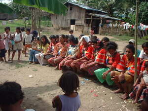
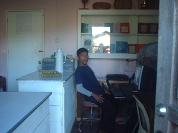

pinnuu  
/pinnuʔu/
Var. pinuu
v_rt.
“sit”
1.
v.
for someone (egpinnuu, migpinnuu/impinnuu, agent, eg><ø-) to sit (down) on the chair or somewhere (egpinnuuwan, impinnuuwan/migpinnuuwan/pigpinnuuwan, location, eg><an-)
Kayi a egpinnuu su meupiya ne pinnuuwan seini.
I will sit here because this is a nice chair.
Eng. sit
Tag. umupô
Tigwanon: pinuʔu
Binukid: pinuʔu
WBM: pinuʔu
Ilianen: pinuʔu
Cotabato Manobo: peneʔu
Proto: pinuʔu
Online dict status: -
Usage level: B
2.
n.
(pinnuuwan, -an) anything for sitting on
Eng. sitting place; chair; seat; bench; form
Online dict status: -
Usage level: F
v.
for someone (egpapinnuu, impapinnuu/migpapinnuu, agent, eg><ø-pA-) to cause someone or something else to sit (egpapinnuwen, impapinnuu/migpapinnuu/pigpapinnuu, patient, eg><en-pA-) somewhere (egpapinnuwan, impapinnuuwan/migpapinnuuwan/pigpapinnuuwan, location, eg><an-pA-)
Eng. cause to sit
Online dict status: -
Usage level: M
v.
for someone (egpinpinnuu, migpinpinnuu/impinpinnuu, agent, eg><ø-rdpCVC-) to sit down for a while
Eng. sit
Online dict status: -
Usage level: M
v.
for someone (egpinpinnuu, migpinpinnuu/impinpinnuu, agent, eg><ø-rdpCVC-) to keep on sitting
Eng. keep on sitting
Online dict status: -
Usage level: M
v.
for group (naminpinnuu, agent, naN-rdpCVC-) to sit and wait
Tatelu ne etew naminpinnuu suled egsambey key te gabas.
Three people are sitting here waiting to borrow the saw.
Eng. sit
Online dict status: -
Usage level: R
3.
v.
for someone (egmapinnuu, migmapinnuu/immapinnuu, agent, eg><ø-mA1-) to set something somewhere (egmapinnuuwan, immapinnuuwan/migmapinnuuwan/pigmapinnuuwan, location, eg><an-mA1-)
Eng. set, to (something somewhere)
Online dict status: -
Usage level: M
4.
n.
(pinpinnuuwan, rdpCVC–an) a reason to stay and wait for something
Online dict status: -
Usage level: R
Idiom: egpinnuu ka bulan
—the moon is full
Online dict status: -
Usage level: R
Updated by: RJH,TME,RJH,NJK,QDL
Last updated: 16/Aug/2010
"egpakapinnuu" in text "Datu Gawilan Rebels against the Government"
"Pinnuu" in text "Pegpanumbaley diye te baley"
"Pinnuu" in text "Diye te iskwilaan"
"egpaminnuu" in healthbook "Mania te keilangan neg lu-luan ta ka me belad ta?"
This page last updated: 19/May/2012
Copyright © 2009-2010, Matigsalug Language Christian Association, Inc